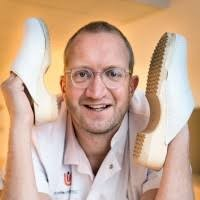

Paul ElbersMD, PhD, EDIC
Intensivist and associate professor of intensive care medicine at Amsterdam UMC. Founding director of the Center for Critical Care Computational Intelligence and co-founder of AmsterdamUMCdb.
Also on Amsterdam UMC, Pure, ORCID, Google Scholar, PubMed, LinkedIn.
- papers in PubMed (249 records, 6 of them corrections)
- 243
- of them as first or last author
- 84
- h-index, Google Scholar, October 2026
- 54
About
Paul Elbers works where intensive care medicine meets data science. His aim is to use the data of every previous intensive care patient to improve the care of every future one: sharing intensive care data, building models with artificial intelligence, bringing them to the bedside as decision support, and testing in clinical trials whether patients are better off.
He co-founded AmsterdamUMCdb, the first freely available, highly granular intensive care database from within the European Union, and leads the Center for Critical Care Computational Intelligence (C4I) at Amsterdam UMC. During the COVID-19 pandemic the center coordinated the Dutch Data Warehouse, which brought together the full health records of critically ill COVID-19 patients from hospitals across the Netherlands. He also initiated ICUdata, a foundation that combines the data of Dutch intensive care units.
His current work focuses on reinforcement learning at the bedside: algorithms that learn the best treatment from data, combined with randomization when needed, so that they keep learning while patients are protected.
Positions
- IntensivistDepartment of Intensive Care Medicine, Amsterdam UMC
- Associate professor of intensive care medicineAmsterdam UMC
- Founding directorCenter for Critical Care Computational Intelligence (C4I), Amsterdam UMC
- Co-founder and administratorAmsterdamUMCdb, the freely available intensive care database of Amsterdam UMC
Boards and committees
- Research CommitteeEuropean Society of Intensive Care Medicine (ESICM)
- Science and Innovation CommitteeDutch Society of Intensive Care (NVIC)
- ICUdataFoundation that combines the data of Dutch intensive care units
- Lage Landen foundation
- International Fluid Academy
- AcidBase.orgOnline decision support for acid–base disorders
Education
- PhDUniversity of Amsterdam. Thesis: Focus on flow. Imaging the human microcirculation in perioperative and intensive care medicine. Promotor: Prof. dr. ir. C. Ince2010
- European Diploma in Intensive Care (EDIC)European Society of Intensive Care Medicine
Grants
- IrelandICUdbOptimizing outcomes from weaning from invasive mechanical ventilation in Ireland: a federated, FAIR-aligned ICU database for benchmarking and policy translation. Health Research Board, Ireland2025–2029
Publications
All papers, by year
As listed in PubMed, including the papers that name him as a member of a study group, without corrections. The same list, always current, is on PubMed; citations are on Google Scholar.
2026 27
- Heldeweg MLA, Krbec M, Vancura M, … Elbers P, et al. Electrolyte redistribution during acute respiratory acid-base changes: an in vivo study using apnoea testing. Br J Anaesth 2026. doi:10.1016/j.bja.2026.09.015
- Editorial Elbers P, Ercole A, Angus DC. Fully flexing the potential of AI in intensive care: reinforcement learning with randomization when needed. Intensive Care Med 2026;52(10):2207–2210. doi:10.1007/s00134-026-08576-2
- Letter Hilders P, Lijović L, Elbers P. Response to 'Comment on "The LoVe score: Development and validation of a bedside clinical index to identify patients at risk for prolonged invasive mechanical ventilation"'. J Intensive Care Soc 2026. doi:10.1177/17511437261493298
- Guarracino F, Elbers P, Slama M, Pinsky MR. Clinical relevance of ventriculo-arterial coupling and how to assess it at the bedside. Ann Intensive Care 2026;16:100170. doi:10.1016/j.aicoj.2026.100170
- Reuland MC, Raasveld SJ, Dongelmans DA, Elbers PWG, Müller MCA, Vlaar APJ. Hemorrhagic shock in intensive care: Variation in blood product administration during resuscitation. Vox Sang 2026. doi:10.1111/vox.70380
- Vistisen ST, Novotny ME, Mukkamala R, Enevoldsen J, Jacquet-Lagreze M, Elbers P. Associations between reduction of hypotension and treatment intensity in hypotension prediction index studies. Anesthesiology 2026. doi:10.1097/ALN.0000000000006367
- Lavinio A, Rocheteau E, Antonelli M, … Elbers P, et al. Heparin formulation and thromboprophylaxis intensity in critically ill patients: Results from the ESICM UNITE registry. Thromb Res 2026;265:109820. doi:10.1016/j.thromres.2026.109820
- Hilders PA, Lijović L, Otten M, … Elbers PWG. The LoVe score: Development and validation of a bedside clinical index to identify patients at risk for prolonged invasive mechanical ventilation. J Intensive Care Soc 2026. doi:10.1177/17511437261479649
- Reuland MC, van der Meer OM, Testoni A, … Elbers PWG, et al. Clinical utility of LLM-assisted chart review for the detection of bleeding events. Transfus Clin Biol 2026. doi:10.1016/j.tracli.2026.07.005
- Otten M, van der Woude B, Elbers PWG, de Grooth HJ. The authors reply. Crit Care Med 2026;54(8):2170–2171. doi:10.1097/CCM.0000000000007247
- Letter Workum JD, Meyfroidt G, Bakker J, … Elbers PWG, et al. Authors reply: "AI in critical care: a roadmap to the future". J Crit Care 2026;94:155597. doi:10.1016/j.jcrc.2026.155597
- Moazeni M, Moraga SM, Wösten M, … Elbers P, et al. Real-time prediction of atrial fibrillation in intensive care unit: a meta-learning approach. JAMIA Open 2026;9(4):ooag110. doi:10.1093/jamiaopen/ooag110
- Thoral PJ, de Metz J, Mulia S, … Elbers PWG. Behaviour artificial intelligence technology to support the decision-making process of continuation or withdrawal of life-sustaining therapy. Intensive Care Med Exp 2026;14(1). doi:10.1186/s40635-026-00930-4
- Rozemeijer S, Dubois EA, de Grooth HJ, … Elbers PWG, et al. Early high-dose vitamin C for out-of-hospital cardiac arrest: the VITaCCA randomized clinical trial. Intensive Care Med 2026;52(7):1447–1457. doi:10.1007/s00134-026-08492-5
- Lijović L, Hilders P, Radočaj T, Širanović M, Elbers P. Power, Duration, and Compliance: Reframing Risk of Ventilatory-Induced Lung Injury With the Risk-Adjusted Mechanical-Power Score. Crit Care Med 2026;54(7):1574–1584. doi:10.1097/CCM.0000000000007129
- Piasecki A, Adamczyk K, Śniegowski M, … Elbers PWG. Early prognostication for ICU patients with combined respiratory and circulatory failure: an interpretable machine learning approach. Sci Rep 2026;16(1). doi:10.1038/s41598-026-59064-y
- Editorial Duška F, Krbec M, Heldeweg M, Elbers P, Giosa L. A pragmatic approach to complex acid base disturbances of critical illness: the "Stewart light". Intensive Care Med 2026;52(6):1322–1325. doi:10.1007/s00134-026-08416-3
- Krbec M, Vančura M, Waldauf P, … Elbers PWG, et al. Improving interpretation of metabolic acid-base disorders by correcting pH-dependent bias in base excess partitioning. Br J Anaesth 2026;136(5):1451–1458. doi:10.1016/j.bja.2026.02.001
- Spoormans EM, Janssens GN, van der Hoeven NW, … Elbers PWG, et al. Immediate vs Delayed Coronary Angiography After Cardiac Arrest Without ST-Segment Elevation: 5-Year Outcomes From the COACT Randomized Trial. J Am Coll Cardiol 2026;87(16):2134–2143. doi:10.1016/j.jacc.2025.12.018
- Review Cecconi M, Greco M, Balzani E, … Elbers P, et al. Innovation in intensive care: a framework to turn ideas and concepts into actionable solutions. Intensive Care Med 2026;52(4):700–713. doi:10.1007/s00134-026-08405-6
- Otten M, van der Woude B, van Kempen BJH, … Elbers PWG, et al. Minimal Gain in Prognostic Certainty for Patients With Hematologic Malignancies Over 2 Weeks of Intensive Care: An Analysis to Inform Time-Limited Trials. Crit Care Med 2026;54(4):860–870. doi:10.1097/CCM.0000000000007006
- Hilders PA, Lijović L, Otten M, … Elbers PWG. Prediction-guided clustering for sepsis phenotyping: a retrospective cohort analysis. Intensive Care Med Exp 2026;14(1). doi:10.1186/s40635-026-00882-9
- Filippini DFL, Khyali J, Janssen M, et al. Paul Elbers as a member of the study group. Tocilizumab Efficacy Across Inflammatory Subphenotypes in COVID-19-Related Acute Respiratory Distress Syndrome. Crit Care Explor 2026;8(3):e1392. doi:10.1097/CCE.0000000000001392
- Lijović L, Dam TA, Baek MS, … Elbers PWG, et al. Respiratory physiology after resupination following prone ventilation to predict 28-day mortality in mechanically ventilated patients: a machine learning analysis. Sci Rep 2026;16(1). doi:10.1038/s41598-026-39336-3
- Review Workum JD, Meyfroidt G, Bakker J, … Elbers PWG, et al. AI in critical care: A roadmap to the future. J Crit Care 2026;91:155262. doi:10.1016/j.jcrc.2025.155262
- Dam TA, Schade RP, de Steenwinkel JEM, … Elbers PWG. Explainable machine learning for discontinuation of therapeutic antibiotics in intensive care patients. J Crit Care 2026;91:155247. doi:10.1016/j.jcrc.2025.155247
- Jagesar A, Smalbil L, Galea E, … Elbers P. Causal deep learning to personalize medicine: Which intensive care patients with sepsis will benefit from corticosteroid therapy? J Intensive Med 2026;6(1):61–68. doi:10.1016/j.jointm.2025.07.002
2025 20
- Review Jagesar AR, Dam TA, Struja T, … Elbers PWG. Sharing is caring: A systematic review of publicly available intensive care data sets. J Crit Care 2025;90:155205. doi:10.1016/j.jcrc.2025.155205
- Rigter IM, Swart EL, Brüggemann RJ, Guo T, Elbers PWG, van Hest RM. External Cross-validation of Two Ciprofloxacin Population Pharmacokinetic Models in Patients in Intensive Care. Ther Drug Monit 2025;47(6):e90–e96. doi:10.1097/FTD.0000000000001357
- Letter Reuland MC, Raasveld SJ, Dongelmans DA, Elbers PWG, Müller MCA, Vlaar APJ. Pitfalls and paradoxes: blood transfusion in 5 public ICU databases. Crit Care 2025;29(1):503. doi:10.1186/s13054-025-05737-5
- Zhang Z, Chen L, Shen H, … Elbers PWG, et al. Deriving consensus sepsis clusters via goal-directed subgroup identification in multi-omics study. Nat Commun 2025;16(1):10328. doi:10.1038/s41467-025-65271-4
- Otten M, van Kempen BJH, van der Woude B, … Elbers PWG. Long-term mortality in ICU patients with hematological malignancies: Impact of organ support duration and ICU length of stay. J Crit Care 2025;89:155122. doi:10.1016/j.jcrc.2025.155122
- Broulikova HM, Wallage J, Roggeveen L, … Elbers PWG, et al. Cost-effectiveness of data driven personalised antibiotic dosing in critically ill patients with sepsis or septic shock. J Clin Monit Comput 2025;39(5):937–946. doi:10.1007/s10877-024-01257-9
- Editorial Vistisen ST, Elbers P. Predicting arterial pressure without prejudice: towards effective hypotension prediction models. Br J Anaesth 2025;135(3):532–537. doi:10.1016/j.bja.2025.06.016
- Bourne RS, Alberto L, Brummel NE, … Elbers P, et al. Understanding barriers and facilitators to implementation of consensus-based recommendations for the management of very old people in intensive care. Age Ageing 2025;54(9). doi:10.1093/ageing/afaf272
- Spoormans EM, Thevathasan T, van Royen N, et al. Paul Elbers as a member of the study group. One-Year Outcomes of Coronary Angiography After Out-of-Hospital Cardiac Arrest Without ST Elevation: An Individual Patient Data Meta-Analysis. JAMA Cardiol 2025;10(8):779–786. doi:10.1001/jamacardio.2025.1194
- Review Cecconi M, Greco M, Shickel B, … Elbers P, et al. Implementing Artificial Intelligence in Critical Care Medicine: a consensus of 22. Crit Care 2025;29(1):290. doi:10.1186/s13054-025-05532-2
- Lijović L, Radočaj T, Kovač N, Vučić M, Elbers P. Predictive performance of ROX index and its variations for NIV failure. Med Intensiva (Engl Ed) 2025;49(7):502136. doi:10.1016/j.medine.2025.502136
- Dam TA, de Bruin D, Cinà G, … Elbers PWG, et al. ICU readmission and mortality risk prediction: Generalizability of a multi-hospital model. J Intensive Med 2025;5(4):377–384. doi:10.1016/j.jointm.2025.03.007
- Krbec M, Brusatori S, Waldauf P, … Elbers P. Determination of pK(A) of nonvolatile weak acids in plasma of healthy volunteers and critically ill patients. Intensive Care Med Exp 2025;13(1):54. doi:10.1186/s40635-025-00762-8
- Palmowski L, Westhus B, Witowski A, … Elbers P, et al. Subphenotypes and the De Ritis ratio for mortality risk stratification in sepsis-associated acute liver injury: a retrospective cohort study. EClinicalMedicine 2025;82:103173. doi:10.1016/j.eclinm.2025.103173
- Steenvoorden TS, de Kruijf KC, Appelman B, … Elbers PWG, et al. Host Response Protein Biomarkers Indicative of Persistent Acute Kidney Injury in Critically Ill COVID-19 Patients. Crit Care Explor 2025;7(3):e1222. doi:10.1097/CCE.0000000000001222
- Wu C, Canakoglu A, Vine J, … Elbers P, et al. Elucidating the causal relationship of mechanical power and lung injury: a dynamic approach to ventilator management. Intensive Care Med Exp 2025;13(1):28. doi:10.1186/s40635-025-00736-w
- Beil M, Alberto L, Bourne RS, … Elbers P, et al. ESICM consensus-based recommendations for the management of very old patients in intensive care. Intensive Care Med 2025;51(2):287–301. doi:10.1007/s00134-025-07794-4
- Editorial Lijović L, Elbers P. Leveraging the power of routinely collected ICU data. Intensive Care Med 2025;51(1):163–166. doi:10.1007/s00134-024-07745-5
- Review Biesheuvel LA, Workum JD, Reuland M, … Elbers P. Large language models in critical care. J Intensive Med 2025;5(2):113–118. doi:10.1016/j.jointm.2024.12.001
- Lijović L, de Grooth HJ, Thoral P, … Elbers P. Preparing for future pandemics: Automated intensive care electronic health record data extraction to accelerate clinical insights. J Intensive Med 2025;5(2):167–175. doi:10.1016/j.jointm.2024.10.003
2024 20
- Wortel SA, Bakhshi-Raiez F, Abu-Hanna A, … Elbers P, et al. Long-term mortality of Dutch COVID-19 patients admitted to the intensive care medicine: a retrospective analysis from a national quality registry. Crit Care Sci 2024;36:e202400251en. doi:10.62675/2965-2774.20240251-en
- Rockenschaub P, Hilbert A, Kossen T, … Elbers P, et al. The Impact of Multi-Institution Datasets on the Generalizability of Machine Learning Prediction Models in the ICU. Crit Care Med 2024;52(11):1710–1721. doi:10.1097/CCM.0000000000006359
- van Rhee KP, Brüggemann RJM, Roberts JA, … Elbers PWG, et al. Pooled Population Pharmacokinetic Analysis and Dose Recommendations for Ciprofloxacin in Intensive Care Unit Patients with Obesity. J Clin Pharmacol 2024;64(9):1165–1172. doi:10.1002/jcph.2450
- Boers LS, van Someren Gréve F, van Hattem JM, et al. Paul Elbers as a member of the study group. Pulmonary herpes simplex virus and cytomegalovirus in patients with acute respiratory distress syndrome related to COVID-19. Intensive Care Med 2024;50(8):1251–1264. doi:10.1007/s00134-024-07529-x
- Jagesar AR, Otten M, Dam TA, … Elbers PWG. Comparative performance of intensive care mortality prediction models based on manually curated versus automatically extracted electronic health record data. Int J Med Inform 2024;188:105477. doi:10.1016/j.ijmedinf.2024.105477
- Marchal A, Cirulli ET, Neveux I, et al. Paul Elbers as a member of the study group. Lack of association between classical HLA genes and asymptomatic SARS-CoV-2 infection. HGG Adv 2024;5(3):100300. doi:10.1016/j.xhgg.2024.100300
- Williams CYK, Edinburgh T, Elbers PWG, Thoral PJ, Ercole A. Application of the Sepsis-3 criteria to describe sepsis epidemiology in the Amsterdam UMCdb intensive care dataset. PLoS One 2024;19(6):e0304133. doi:10.1371/journal.pone.0304133
- Letter De Corte T, Kohler K, Cecconi M, et al. Paul Elbers as a member of the study group. Characteristics of co-infection and secondary infection amongst critically ill COVID-19 patients in the first two waves of the pandemic. Intensive Care Med 2024;50(6):989–993. doi:10.1007/s00134-024-07444-1
- Review Biesheuvel LA, Dongelmans DA, Elbers PWG. Artificial intelligence to advance acute and intensive care medicine. Curr Opin Crit Care 2024;30(3):246–250. doi:10.1097/MCC.0000000000001150
- Slim MA, Lim EHT, van Vught LA, et al. Paul Elbers as a member of the study group. The effect of immunosuppressive therapies on the endothelial host response in critically ill COVID-19 patients. Sci Rep 2024;14(1):9113. doi:10.1038/s41598-024-59385-w
- Review Pinsky MR, Bedoya A, Bihorac A, … Elbers P, et al. Use of artificial intelligence in critical care: opportunities and obstacles. Crit Care 2024;28(1):113. doi:10.1186/s13054-024-04860-z
- Roggeveen LF, Hassouni AE, de Grooth HJ, Girbes ARJ, Hoogendoorn M, Elbers PWG. Reinforcement learning for intensive care medicine: actionable clinical insights from novel approaches to reward shaping and off-policy model evaluation. Intensive Care Med Exp 2024;12(1):32. doi:10.1186/s40635-024-00614-x
- Editorial Elbers P, Thoral P, Bos LDJ, Greco M, Wendel-Garcia PD, Ercole A. The ESICM datathon and the ESICM and ICMx data science strategy. Intensive Care Med Exp 2024;12(1):29. doi:10.1186/s40635-024-00615-w
- Michels EHA, Appelman B, de Brabander J, et al. Paul Elbers as a member of the study group. Host Response Changes and Their Association with Mortality in COVID-19 Patients with Lymphopenia. Am J Respir Crit Care Med 2024;209(4):402–416. doi:10.1164/rccm.202305-0890OC
- Review Otten M, Jagesar AR, Dam TA, … Elbers PWG. Does Reinforcement Learning Improve Outcomes for Critically Ill Patients? A Systematic Review and Level-of-Readiness Assessment. Crit Care Med 2024;52(2):e79–e88. doi:10.1097/CCM.0000000000006100
- Termorshuizen F, Dongelmans DA, Brinkman S, et al. Paul Elbers as a member of the study group. Characteristics and outcome of COVID-19 patients admitted to the ICU: a nationwide cohort study on the comparison between the consecutive stages of the COVID-19 pandemic in the Netherlands, an update. Ann Intensive Care 2024;14(1):11. doi:10.1186/s13613-023-01238-2
- Schut MC, Dongelmans DA, de Lange DW, et al. Paul Elbers as a member of the study group. Development and evaluation of regression tree models for predicting in-hospital mortality of a national registry of COVID-19 patients over six pandemic surges. BMC Med Inform Decis Mak 2024;24(1):7. doi:10.1186/s12911-023-02401-2
- Maas AFG, Wyers C, Dielis A, … Elbers P, et al. The Incidence of Pulmonary Embolism in Hospitalized Non-ICU Patients with COVID-19 during the First Wave: A Multicenter Retrospective Cohort Study in the Netherlands. J Vasc Res 2024;61(3):142–150. doi:10.1159/000538312
- den Hengst F, Otten M, Elbers P, van Harmelen F, François-Lavet V, Hoogendoorn M. Guideline-informed reinforcement learning for mechanical ventilation in critical care. Artif Intell Med 2024;147:102742. doi:10.1016/j.artmed.2023.102742
- Spoormans EM, Lemkes JS, Janssens GN, … Elbers PWG, et al. The Prognostic Value of Troponin-T in Out-of-Hospital Cardiac Arrest Without ST-Segment Elevation: A COACT Substudy. J Soc Cardiovasc Angiogr Interv 2024;3(2):101191. doi:10.1016/j.jscai.2023.101191
2023 26
- Dam TA, Fleuren LM, Roggeveen LF, … Elbers PWG. Augmented intelligence facilitates concept mapping across different electronic health records. Int J Med Inform 2023;179:105233. doi:10.1016/j.ijmedinf.2023.105233
- Review Vagliano I, Dormosh N, Rios M, … Elbers PWG, et al. Prognostic models of in-hospital mortality of intensive care patients using neural representation of unstructured text: A systematic review and critical appraisal. J Biomed Inform 2023;146:104504. doi:10.1016/j.jbi.2023.104504
- de Groot R, Püttmann DP, Fleuren LM, … Elbers PWG, et al. Determining and assessing characteristics of data element names impacting the performance of annotation using Usagi. Int J Med Inform 2023;178:105200. doi:10.1016/j.ijmedinf.2023.105200
- Léopold V, Chouchane O, Butler JM, et al. Paul Elbers as a member of the study group. Platelets of COVID-19 patients display mitochondrial dysfunction, oxidative stress, and energy metabolism failure compatible with cell death. Res Pract Thromb Haemost 2023;7(7):102213. doi:10.1016/j.rpth.2023.102213
- Vagliano I, Kingma MY, Dongelmans DA, et al. Paul Elbers as a member of the study group. Automated identification of patient subgroups: A case-study on mortality of COVID-19 patients admitted to the ICU. Comput Biol Med 2023;163:107146. doi:10.1016/j.compbiomed.2023.107146
- de Brabander J, Boers LS, Kullberg RFJ, et al. Paul Elbers as a member of the study group. Persistent alveolar inflammatory response in critically ill patients with COVID-19 is associated with mortality. Thorax 2023;78(9):912–921. doi:10.1136/thorax-2023-219989
- Hessels LM, Speksnijder E, Paternotte N, et al. Paul Elbers as a member of the study group. Procalcitonin-Guided Antibiotic Prescription in Patients With COVID-19: A Multicenter Observational Cohort Study. Chest 2023;164(3):596–605. doi:10.1016/j.chest.2023.04.032
- Guo L, Appelman B, Mooij-Kalverda K, et al. Paul Elbers as a member of the study group. Prolonged indoleamine 2,3-dioxygenase-2 activity and associated cellular stress in post-acute sequelae of SARS-CoV-2 infection. EBioMedicine 2023;94:104729. doi:10.1016/j.ebiom.2023.104729
- Letter Thoral P, Elbers P. Encouraging responsible intensive care data sharing. Intensive Care Med 2023;49(8):1027–1028. doi:10.1007/s00134-023-07113-9
- Puttmann D, de Groot R, de Keizer N, … Elbers PWG, et al. Assessing the FAIRness of databases on the EHDEN portal: A case study on two Dutch ICU databases. Int J Med Inform 2023;176:105104. doi:10.1016/j.ijmedinf.2023.105104
- Michels EHA, Appelman B, de Brabander J, … Elbers P, et al. Age-related changes in plasma biomarkers and their association with mortality in COVID-19. Eur Respir J 2023;62(1). doi:10.1183/13993003.00011-2023
- Letter Krbec M, Duška F, Elbers PWG. Toward a unified understanding of blood buffer power. J Appl Physiol (1985) 2023;135(1):202. doi:10.1152/japplphysiol.00320.2023
- Verhaeghe J, De Corte T, Sauer CM, … Elbers P, et al. Generalizable calibrated machine learning models for real-time atrial fibrillation risk prediction in ICU patients. Int J Med Inform 2023;175:105086. doi:10.1016/j.ijmedinf.2023.105086
- Janssen A, De Waele JJ, Elbers PWG. Towards adequate and automated antibiotic dosing. Intensive Care Med 2023;49(7):853–856. doi:10.1007/s00134-023-07047-2
- Siepel S, Dam TA, Fleuren LM, … Elbers PWG, et al. Evolution of Clinical Phenotypes of COVID-19 Patients During Intensive Care Treatment: An Unsupervised Machine Learning Analysis. J Intensive Care Med 2023;38(7):612–629. doi:10.1177/08850666231153393
- de Kok JWTM, de la Hoz MÁA, de Jong Y, … Elbers PWG, et al. A guide to sharing open healthcare data under the General Data Protection Regulation. Sci Data 2023;10(1):404. doi:10.1038/s41597-023-02256-2
- Lijović L, Pelajić S, Hawchar F, … Elbers P. Diagnosing acute kidney injury ahead of time in critically ill septic patients using kinetic estimated glomerular filtration rate. J Crit Care 2023;75:154276. doi:10.1016/j.jcrc.2023.154276
- Smits T, Heldeweg M, Tulleken AM, … Elbers P, et al. Effects of nurse delivered thoracic ultrasound on management of adult intensive care unit patients: A prospective observational study. Int J Nurs Stud Adv 2023;5:100135. doi:10.1016/j.ijnsa.2023.100135
- Matuozzo D, Talouarn E, Marchal A, et al. Paul Elbers as a member of the study group. Rare predicted loss-of-function variants of type I IFN immunity genes are associated with life-threatening COVID-19. Genome Med 2023;15(1):22. doi:10.1186/s13073-023-01173-8
- den Uil CA, Termorshuizen F, Rietdijk WJR, et al. Paul Elbers as a member of the study group. Age Moderates the Effect of Obesity on Mortality Risk in Critically Ill Patients With COVID-19: A Nationwide Observational Cohort Study. Crit Care Med 2023;51(4):484–491. doi:10.1097/CCM.0000000000005788
- Yarnell CJ, Angriman F, Ferreyro BL, … Elbers P, et al. Oxygenation thresholds for invasive ventilation in hypoxemic respiratory failure: a target trial emulation in two cohorts. Crit Care 2023;27(1):67. doi:10.1186/s13054-023-04307-x
- Bologheanu R, Kapral L, Laxar D, … Elbers P, et al. Development of a Reinforcement Learning Algorithm to Optimize Corticosteroid Therapy in Critically Ill Patients with Sepsis. J Clin Med 2023;12(4). doi:10.3390/jcm12041513
- de Hond AAH, Kant IMJ, Fornasa M, … Elbers PWG, et al. Predicting Readmission or Death After Discharge From the ICU: External Validation and Retraining of a Machine Learning Model. Crit Care Med 2023;51(2):291–300. doi:10.1097/CCM.0000000000005758
- Yarnell CJ, Johnson A, Dam T, … Elbers P, et al. Do Thresholds for Invasive Ventilation in Hypoxemic Respiratory Failure Exist? A Cohort Study. Am J Respir Crit Care Med 2023;207(3):271–282. doi:10.1164/rccm.202206-1092OC
- Review Huntjens DW, Dijkstra JA, Verwiel LN, … Elbers P, et al. Optimizing Antiviral Dosing for HSV and CMV Treatment in Immunocompromised Patients. Pharmaceutics 2023;15(1). doi:10.3390/pharmaceutics15010163
- Overgaauw A, Meijboom LJ, van Es J, … Elbers P, et al. Real-world characteristics and outcomes of patients with intermediate high risk acute pulmonary embolism. Acute Med 2023;22(2):61–66. doi:10.52964/AMJA.0936
2022 34
- Letter Lim EHT, Vlaar APJ, Bos LDJ, et al. Paul Elbers as a member of the study group. Anti-C5a antibody vilobelimab treatment and the effect on biomarkers of inflammation and coagulation in patients with severe COVID-19: a substudy of the phase 2 PANAMO trial. Respir Res 2022;23(1):375. doi:10.1186/s12931-022-02278-1
- Review Sauer CM, Chen LC, Hyland SL, Girbes A, Elbers P, Celi LA. Leveraging electronic health records for data science: common pitfalls and how to avoid them. Lancet Digit Health 2022;4(12):e893–e898. doi:10.1016/S2589-7500(22)00154-6
- Vagliano I, Schut MC, Abu-Hanna A, … Elbers PWG, et al. Assess and validate predictive performance of models for in-hospital mortality in COVID-19 patients: A retrospective cohort study in the Netherlands comparing the value of registry data with high-granular electronic health records. Int J Med Inform 2022;167:104863. doi:10.1016/j.ijmedinf.2022.104863
- Smit JM, Exterkate L, van Tienhoven AJ, … Elbers PWG, et al. INCIDENCE, RISK FACTORS, AND OUTCOME OF SUSPECTED CENTRAL VENOUS CATHETER-RELATED INFECTIONS IN CRITICALLY ILL COVID-19 PATIENTS: A MULTICENTER RETROSPECTIVE COHORT STUDY. Shock 2022;58(5):358–365. doi:10.1097/SHK.0000000000001994
- Dam TA, Roggeveen LF, van Diggelen F, … Elbers PWG. Predicting responders to prone positioning in mechanically ventilated patients with COVID-19 using machine learning. Ann Intensive Care 2022;12(1):99. doi:10.1186/s13613-022-01070-0
- Wortel SA, Bakhshi-Raiez F, Termorshuizen F, et al. Paul Elbers as a member of the study group. Comparison of patient characteristics and long-term mortality between transferred and non-transferred COVID-19 patients in Dutch intensive care units: A national cohort study. Acta Anaesthesiol Scand 2022;66(9):1107–1115. doi:10.1111/aas.14129
- Nasa P, Wise R, Elbers PWG, et al. Intravenous fluid therapy in perioperative and critical care setting-Knowledge test and practice: An international cross-sectional survey. J Crit Care 2022;71:154122. doi:10.1016/j.jcrc.2022.154122
- Kullberg RFJ, de Brabander J, Boers LS, et al. Paul Elbers as a member of the study group. Lung Microbiota of Critically Ill Patients with COVID-19 Are Associated with Nonresolving Acute Respiratory Distress Syndrome. Am J Respir Crit Care Med 2022;206(7):846–856. doi:10.1164/rccm.202202-0274OC
- Review Jacobs R, Wise RD, Myatchin I, … Elbers PWG, et al. Fluid Management, Intra-Abdominal Hypertension and the Abdominal Compartment Syndrome: A Narrative Review. Life (Basel) 2022;12(9). doi:10.3390/life12091390
- Roggeveen LF, Guo T, Fleuren LM, … Elbers PWG. Right dose, right now: bedside, real-time, data-driven, and personalised antibiotic dosing in critically ill patients with sepsis or septic shock-a two-centre randomised clinical trial. Crit Care 2022;26(1):265. doi:10.1186/s13054-022-04098-7
- Conway Morris A, Kohler K, De Corte T, … Elbers PWG, et al. Co-infection and ICU-acquired infection in COIVD-19 ICU patients: a secondary analysis of the UNITE-COVID data set. Crit Care 2022;26(1):236. doi:10.1186/s13054-022-04108-8
- Smeele PJ, Vermunt L, Blok S, et al. Paul Elbers as a member of the study group. Neurofilament light increases over time in severe COVID-19 and is associated with delirium. Brain Commun 2022;4(4):fcac195. doi:10.1093/braincomms/fcac195
- Spoormans EM, Lemkes JS, Janssens GN, … Elbers PWG, et al. Ischaemic electrocardiogram patterns and its association with survival in out-of-hospital cardiac arrest patients without ST-segment elevation myocardial infarction: a COACT trials' post-hoc subgroup analysis. Eur Heart J Acute Cardiovasc Care 2022;11(7):535–543. doi:10.1093/ehjacc/zuac060
- Letter de Brabander J, Michels EHA, van Linge CCA, et al. Paul Elbers as a member of the study group. Association between dexamethasone treatment and the host response in COVID-19 patients admitted to the general ward. Respir Res 2022;23(1):145. doi:10.1186/s12931-022-02060-3
- Greco M, De Corte T, Ercole A, … Elbers P, et al. Clinical and organizational factors associated with mortality during the peak of first COVID-19 wave: the global UNITE-COVID study. Intensive Care Med 2022;48(6):690–705. doi:10.1007/s00134-022-06705-1
- Guo T, Abdulla A, Koch BCP, … Elbers PWG, et al. Pooled Population Pharmacokinetic Analysis for Exploring Ciprofloxacin Pharmacokinetic Variability in Intensive Care Patients. Clin Pharmacokinet 2022;61(6):869–879. doi:10.1007/s40262-022-01114-5
- Sauer CM, Dam TA, Celi LA, … Elbers P. Systematic Review and Comparison of Publicly Available ICU Data Sets-A Decision Guide for Clinicians and Data Scientists. Crit Care Med 2022;50(6):e581–e588. doi:10.1097/CCM.0000000000005517
- Fujarski M, Porschen C, Plagwitz L, … Elbers P, et al. Prediction of Acute Kidney Injury in the Intensive Care Unit: Preliminary Findings in a European Open Access Database. Stud Health Technol Inform 2022;294:139–140. doi:10.3233/SHTI220419
- Collard D, Stronks K, Harris V, … Elbers P, et al. Ethnic Differences in Coronavirus Disease 2019 Hospitalization and Hospital Outcomes in a Multiethnic Population in the Netherlands. Open Forum Infect Dis 2022;9(6):ofac257. doi:10.1093/ofid/ofac257
- Chandra J, Armengol de la Hoz MA, Lee G, … Elbers P, et al. A novel Vascular Leak Index identifies sepsis patients with a higher risk for in-hospital death and fluid accumulation. Crit Care 2022;26(1):103. doi:10.1186/s13054-022-03968-4
- Vagliano I, Brinkman S, Abu-Hanna A, … Elbers PWG, et al. Can we reliably automate clinical prognostic modelling? A retrospective cohort study for ICU triage prediction of in-hospital mortality of COVID-19 patients in the Netherlands. Int J Med Inform 2022;160:104688. doi:10.1016/j.ijmedinf.2022.104688
- Brinkman S, Termorshuizen F, Dongelmans DA, et al. Paul Elbers as a member of the study group. Comparison of outcome and characteristics between 6343 COVID-19 patients and 2256 other community-acquired viral pneumonia patients admitted to Dutch ICUs. J Crit Care 2022;68:76–82. doi:10.1016/j.jcrc.2021.12.007
- Edinburgh T, Eglen SJ, Thoral P, Elbers P, Ercole A. Sepsis-3 criteria in AmsterdamUMCdb: open-source code implementation. GigaByte 2022;2022:gigabyte45. doi:10.46471/gigabyte.45
- de Vos J, Visser LA, de Beer AA, … Elbers PWG, et al. The Potential Cost-Effectiveness of a Machine Learning Tool That Can Prevent Untimely Intensive Care Unit Discharge. Value Health 2022;25(3):359–367. doi:10.1016/j.jval.2021.06.018
- Camaro C, Bonnes JL, Adang EM, … Elbers PW, et al. Cost Analysis From a Randomized Comparison of Immediate Versus Delayed Angiography After Cardiac Arrest. J Am Heart Assoc 2022;11(5):e022238. doi:10.1161/JAHA.121.022238
- Letter de Grooth HJ, Elbers P. Pick your prior: scepticism about sceptical prior beliefs. Intensive Care Med 2022;48(3):374–375. doi:10.1007/s00134-021-06602-z
- Janssens GN, Daemen J, Lemkes JS, … Elbers PWG, et al. The influence of timing of coronary angiography on acute kidney injury in out-of-hospital cardiac arrest patients: a retrospective cohort study. Ann Intensive Care 2022;12(1):12. doi:10.1186/s13613-022-00987-w
- Appelman B, Oppelaar JJ, Broeders L, et al. Paul Elbers as a member of the study group. Mortality and readmission rates among hospitalized COVID-19 patients with varying stages of chronic kidney disease: a multicenter retrospective cohort. Sci Rep 2022;12(1):2258. doi:10.1038/s41598-022-06276-7
- van der Ven WH, Schuurmans J, Schenk J, … Elbers PWG, et al. Monitoring, management, and outcome of hypotension in Intensive Care Unit patients, an international survey of the European Society of Intensive Care Medicine. J Crit Care 2022;67:118–125. doi:10.1016/j.jcrc.2021.10.008
- Spoormans EM, Lemkes JS, Janssens GN, … Elbers PWG. Targeted Temperature Management in Out-of-Hospital Cardiac Arrest With Shockable Rhythm: A Post Hoc Analysis of the Coronary Angiography After Cardiac Arrest Trial. Crit Care Med 2022;50(2):e129–e142. doi:10.1097/CCM.0000000000005271
- Dongelmans DA, Termorshuizen F, Brinkman S, et al. Paul Elbers as a member of the study group. Characteristics and outcome of COVID-19 patients admitted to the ICU: a nationwide cohort study on the comparison between the first and the consecutive upsurges of the second wave of the COVID-19 pandemic in the Netherlands. Ann Intensive Care 2022;12(1):5. doi:10.1186/s13613-021-00978-3
- Boerman AW, Schinkel M, Meijerink L, … Elbers PWG, et al. Using machine learning to predict blood culture outcomes in the emergency department: a single-centre, retrospective, observational study. BMJ Open 2022;12(1):e053332. doi:10.1136/bmjopen-2021-053332
- Smit JM, Krijthe JH, Endeman H, … Elbers PWG, et al. Dynamic prediction of mortality in COVID-19 patients in the intensive care unit: A retrospective multi-center cohort study. Intell Based Med 2022;6:100071. doi:10.1016/j.ibmed.2022.100071
- Review Plečko D, Bennett N, Mårtensson J, … Elbers PWG, et al. Rapid Evaluation of Coronavirus Illness Severity (RECOILS) in intensive care: Development and validation of a prognostic tool for in-hospital mortality. Acta Anaesthesiol Scand 2022;66(1):65–75. doi:10.1111/aas.13991
2021 37
- Fleuren LM, Dam TA, Tonutti M, … Elbers PWG. Predictors for extubation failure in COVID-19 patients using a machine learning approach. Crit Care 2021;25(1):448. doi:10.1186/s13054-021-03864-3
- De Corte T, Elbers P, De Waele J. The future of antimicrobial dosing in the ICU: an opportunity for data science. Intensive Care Med 2021;47(12):1481–1483. doi:10.1007/s00134-021-06549-1
- Paul Elbers as a member of the study group. Mapping the human genetic architecture of COVID-19. Nature 2021;600(7889):472–477. doi:10.1038/s41586-021-03767-x
- Letter de Metz J, Thoral PJ, Chorus CG, Elbers PWG, van den Bogaard B. Behavioural artificial intelligence technology for COVID-19 intensivist triage decisions: making the implicit explicit. Intensive Care Med 2021;47(11):1327–1328. doi:10.1007/s00134-021-06453-8
- Dam TA, de Grooth HJ, Klausch T, … Elbers PWG. Some Patients Are More Equal Than Others: Variation in Ventilator Settings for Coronavirus Disease 2019 Acute Respiratory Distress Syndrome. Crit Care Explor 2021;3(10):e0555. doi:10.1097/CCE.0000000000000555
- Sauer CM, Gómez J, Botella MR, … Elbers P, et al. Understanding critically ill sepsis patients with normal serum lactate levels: results from U.S. and European ICU cohorts. Sci Rep 2021;11(1):20076. doi:10.1038/s41598-021-99581-6
- Xu H, Agha-Mir-Salim L, O'Brien Z, … Elbers P, et al. Varying association of laboratory values with reference ranges and outcomes in critically ill patients: an analysis of data from five databases in four countries across Asia, Europe and North America. BMJ Health Care Inform 2021;28(1). doi:10.1136/bmjhci-2021-100419
- Schenk J, van der Ven WH, Schuurmans J, … Elbers PWG, et al. Definition and incidence of hypotension in intensive care unit patients, an international survey of the European Society of Intensive Care Medicine. J Crit Care 2021;65:142–148. doi:10.1016/j.jcrc.2021.05.023
- Smit JM, Haaksma ME, Winkler MH, … Elbers PWG, et al. Lung ultrasound in a tertiary intensive care unit population: a diagnostic accuracy study. Crit Care 2021;25(1):339. doi:10.1186/s13054-021-03759-3
- Gelissen H, de Grooth HJ, Smulders Y, … Elbers P, et al. Effect of Low-Normal vs High-Normal Oxygenation Targets on Organ Dysfunction in Critically Ill Patients: A Randomized Clinical Trial. JAMA 2021;326(10):940–948. doi:10.1001/jama.2021.13011
- Thoral PJ, Fornasa M, de Bruin DP, … Elbers PWG. Explainable Machine Learning on AmsterdamUMCdb for ICU Discharge Decision Support: Uniting Intensivists and Data Scientists. Crit Care Explor 2021;3(9):e0529. doi:10.1097/CCE.0000000000000529
- Fleuren LM, Dam TA, Tonutti M, … Elbers PWG. The Dutch Data Warehouse, a multicenter and full-admission electronic health records database for critically ill COVID-19 patients. Crit Care 2021;25(1):304. doi:10.1186/s13054-021-03733-z
- Asano T, Boisson B, Onodi F, et al. Paul Elbers as a member of the study group. X-linked recessive TLR7 deficiency in ~1% of men under 60 years old with life-threatening COVID-19. Sci Immunol 2021;6(62). doi:10.1126/sciimmunol.abl4348
- Bastard P, Gervais A, Le Voyer T, et al. Paul Elbers as a member of the study group. Autoantibodies neutralizing type I IFNs are present in ~4% of uninfected individuals over 70 years old and account for ~20% of COVID-19 deaths. Sci Immunol 2021;6(62). doi:10.1126/sciimmunol.abl4340
- Rozemeijer S, de Grooth HJ, Elbers PWG, et al. Early high-dose vitamin C in post-cardiac arrest syndrome (VITaCCA): study protocol for a randomized, double-blind, multi-center, placebo-controlled trial. Trials 2021;22(1):546. doi:10.1186/s13063-021-05483-3
- Rozemeijer S, Smit B, Elbers PWG, Girbes ARJ, Oudemans-van Straaten HM, de Man AME. Rapid screening of critically ill patients for low plasma vitamin C concentrations using a point-of-care oxidation-reduction potential measurement. Intensive Care Med Exp 2021;9(1):40. doi:10.1186/s40635-021-00403-w
- Ottenhoff MC, Ramos LA, Potters W, … Elbers PWG, et al. Predicting mortality of individual patients with COVID-19: a multicentre Dutch cohort. BMJ Open 2021;11(7):e047347. doi:10.1136/bmjopen-2020-047347
- Lemkes JS, Spoormans EM, Demirkiran A, … Elbers PWG, et al. The effect of immediate coronary angiography after cardiac arrest without ST-segment elevation on left ventricular function. A sub-study of the COACT randomised trial. Resuscitation 2021;164:93–100. doi:10.1016/j.resuscitation.2021.04.020
- Fleuren LM, Tonutti M, de Bruin DP, … Elbers PWG, et al. Risk factors for adverse outcomes during mechanical ventilation of 1152 COVID-19 patients: a multicenter machine learning study with highly granular data from the Dutch Data Warehouse. Intensive Care Med Exp 2021;9(1):32. doi:10.1186/s40635-021-00397-5
- Zonneveld R, Jurriaans S, van Gool T, et al. Paul Elbers as a member of the study group. Head-to-head validation of six immunoassays for SARS-CoV-2 in hospitalized patients. J Clin Virol 2021;139:104821. doi:10.1016/j.jcv.2021.104821
- Letter Koning R, Bastard P, Casanova JL, et al. Paul Elbers as a member of the study group. Autoantibodies against type I interferons are associated with multi-organ failure in COVID-19 patients. Intensive Care Med 2021;47(6):704–706. doi:10.1007/s00134-021-06392-4
- Thoral PJ, Peppink JM, Driessen RH, … Elbers PWG. Sharing ICU Patient Data Responsibly Under the Society of Critical Care Medicine/European Society of Intensive Care Medicine Joint Data Science Collaboration: The Amsterdam University Medical Centers Database (AmsterdamUMCdb) Example. Crit Care Med 2021;49(6):e563–e577. doi:10.1097/CCM.0000000000004916
- Werumeus Buning A, Hodiamont CJ, Lechner NM, … Elbers PWG, et al. Population Pharmacokinetics and Probability of Target Attainment of Different Dosing Regimens of Ceftazidime in Critically Ill Patients with a Proven or Suspected Pseudomonas aeruginosa Infection. Antibiotics (Basel) 2021;10(6). doi:10.3390/antibiotics10060612
- Paranjape K, Schinkel M, Hammer RD, … Elbers PWG, et al. The Value of Artificial Intelligence in Laboratory Medicine. Am J Clin Pathol 2021;155(6):823–831. doi:10.1093/ajcp/aqaa170
- Review Van Regenmortel N, Moers L, Langer T, … Elbers P, et al. Fluid-induced harm in the hospital: look beyond volume and start considering sodium. From physiology towards recommendations for daily practice in hospitalized adults. Ann Intensive Care 2021;11(1):79. doi:10.1186/s13613-021-00851-3
- de Bruin S, Bos LD, van Roon MA, et al. Paul Elbers as a member of the study group. Clinical features and prognostic factors in Covid-19: A prospective cohort study. EBioMedicine 2021;67:103378. doi:10.1016/j.ebiom.2021.103378
- Bulthuis MC, Boxhoorn L, Beudel M, … Elbers PWG, et al. Acute pancreatitis in COVID-19 patients: true risk? Scand J Gastroenterol 2021;56(5):585–587. doi:10.1080/00365521.2021.1896776
- Letter Schinkel M, Appelman B, Butler J, et al. Paul Elbers as a member of the study group. Association of clinical sub-phenotypes and clinical deterioration in COVID-19: further cluster analyses. Intensive Care Med 2021;47(4):482–484. doi:10.1007/s00134-021-06363-9
- Letter Fleuren LM, de Bruin DP, Tonutti M, Lalisang RCA, Elbers PWG. Large-scale ICU data sharing for global collaboration: the first 1633 critically ill COVID-19 patients in the Dutch Data Warehouse. Intensive Care Med 2021;47(4):478–481. doi:10.1007/s00134-021-06361-x
- Guo T, van Hest RM, Fleuren LM, … Elbers PWG. Why we should sample sparsely and aim for a higher target: Lessons from model-based therapeutic drug monitoring of vancomycin in intensive care patients. Br J Clin Pharmacol 2021;87(3):1234–1242. doi:10.1111/bcp.14498
- Larsen MD, de Graaf EL, Sonneveld ME, et al. Paul Elbers as a member of the study group. Afucosylated IgG characterizes enveloped viral responses and correlates with COVID-19 severity. Science 2021;371(6532). doi:10.1126/science.abc8378
- Collard D, Nurmohamed NS, Kaiser Y, … Elbers PWG, et al. Cardiovascular risk factors and COVID-19 outcomes in hospitalised patients: a prospective cohort study. BMJ Open 2021;11(2):e045482. doi:10.1136/bmjopen-2020-045482
- Roggeveen L, El Hassouni A, Ahrendt J, … Elbers PW. Transatlantic transferability of a new reinforcement learning model for optimizing haemodynamic treatment for critically ill patients with sepsis. Artif Intell Med 2021;112:102003. doi:10.1016/j.artmed.2020.102003
- Editorial Maslove DM, Elbers PWG, Clermont G. Artificial intelligence in telemetry: what clinicians should know. Intensive Care Med 2021;47(2):150–153. doi:10.1007/s00134-020-06295-w
- Peters EJ, Collard D, Van Assen S, … Elbers PW, et al. Outcomes of persons with coronavirus disease 2019 in hospitals with and without standard treatment with (hydroxy)chloroquine. Clin Microbiol Infect 2021;27(2):264–268. doi:10.1016/j.cmi.2020.10.004
- Ariës MJH, van den Bergh JP, Beudel M, … Elbers PWG, et al. [Clinical course of COVID-19 in the Netherlands: an overview of 2607 patients in hospital during the first wave]. Ned Tijdschr Geneeskd 2021;165. PubMed
- Spoormans EM, Lemkes JS, Janssens GN, … Elbers PWG, et al. Sex differences in patients with out-of-hospital cardiac arrest without ST-segment elevation: A COACT trial substudy. Resuscitation 2021;158:14–22. doi:10.1016/j.resuscitation.2020.10.026
2020 13
- Vogelzang EH, Loeff FC, Derksen NIL, et al. Paul Elbers as a member of the study group. Development of a SARS-CoV-2 Total Antibody Assay and the Dynamics of Antibody Response over Time in Hospitalized and Nonhospitalized Patients with COVID-19. J Immunol 2020;205(12):3491–3499. doi:10.4049/jimmunol.2000767
- Lemkes JS, Janssens GN, van der Hoeven NW, … Elbers PWG, et al. Coronary Angiography After Cardiac Arrest Without ST Segment Elevation: One-Year Outcomes of the COACT Randomized Clinical Trial. JAMA Cardiol 2020;5(12):1358–1365. doi:10.1001/jamacardio.2020.3670
- Elbers PWG, de Grooth HJ, Girbes ARJ. The effect of small versus large clog size on emergency response time: A randomized controlled trial. J Crit Care 2020;60:116–119. doi:10.1016/j.jcrc.2020.07.028
- Spoormans EM, Lemkes JS, Janssens GN, … Elbers PWG, et al. Data on sex differences in one-year outcomes of out-of-hospital cardiac arrest patients without ST-segment elevation. Data Brief 2020;33:106521. doi:10.1016/j.dib.2020.106521
- Bastard P, Rosen LB, Zhang Q, et al. Paul Elbers as a member of the study group. Autoantibodies against type I IFNs in patients with life-threatening COVID-19. Science 2020;370(6515). doi:10.1126/science.abd4585
- Zhang Q, Bastard P, Liu Z, et al. Paul Elbers as a member of the study group. Inborn errors of type I IFN immunity in patients with life-threatening COVID-19. Science 2020;370(6515). doi:10.1126/science.abd4570
- Guo T, van Hest RM, Zwep LB, … Elbers PWG, et al. Optimizing Predictive Performance of Bayesian Forecasting for Vancomycin Concentration in Intensive Care Patients. Pharm Res 2020;37(9):171. doi:10.1007/s11095-020-02908-7
- Letter Fleuren LM, Thoral P, Shillan D, Ercole A, Elbers PWG. Machine learning in intensive care medicine: ready for take-off? Intensive Care Med 2020;46(7):1486–1488. doi:10.1007/s00134-020-06045-y
- Review Malbrain MLNG, Langer T, Annane D, … Elbers P, et al. Intravenous fluid therapy in the perioperative and critical care setting: Executive summary of the International Fluid Academy (IFA). Ann Intensive Care 2020;10(1):64. doi:10.1186/s13613-020-00679-3
- Roggeveen LF, Guo T, Driessen RH, … Elbers P. Right Dose, Right Now: Development of AutoKinetics for Real Time Model Informed Precision Antibiotic Dosing Decision Support at the Bedside of Critically Ill Patients. Front Pharmacol 2020;11:646. doi:10.3389/fphar.2020.00646
- Letter Haaksma ME, Smit JM, Heldeweg MLA, Pisani L, Elbers P, Tuinman PR. Lung ultrasound and B-lines: B careful! Intensive Care Med 2020;46(3):544–545. doi:10.1007/s00134-019-05911-8
- Review Fleuren LM, Klausch TLT, Zwager CL, … Elbers PWG. Machine learning for the prediction of sepsis: a systematic review and meta-analysis of diagnostic test accuracy. Intensive Care Med 2020;46(3):383–400. doi:10.1007/s00134-019-05872-y
- Letter de Grooth HJ, Elbers PWG, Vincent JL. Vitamin C for Sepsis and Acute Respiratory Failure. JAMA 2020;323(8):792. doi:10.1001/jama.2019.21981
2019 12
- Roggeveen LF, Fleuren LM, Guo T, … Elbers PWG. Right Dose Right Now: bedside data-driven personalized antibiotic dosing in severe sepsis and septic shock - rationale and design of a multicenter randomized controlled superiority trial. Trials 2019;20(1):745. doi:10.1186/s13063-019-3911-5
- Review Zwager CL, Tuinman PR, de Grooth HJ, … Elbers PWG. Why physiology will continue to guide the choice between balanced crystalloids and normal saline: a systematic review and meta-analysis. Crit Care 2019;23(1):366. doi:10.1186/s13054-019-2658-4
- Review Spoelstra-de Man AME, Oudemans-van Straaten HM, Elbers PWG. Vitamin C and thiamine in critical illness. BJA Educ 2019;19(9):290–296. doi:10.1016/j.bjae.2019.05.005
- Letter Santos-Silva J, Lichtenstein D, Tuinman PR, Elbers PWG. The lung point, still a sign specific to pneumothorax. Intensive Care Med 2019;45(9):1327–1328. doi:10.1007/s00134-019-05677-z
- Rozemeijer S, Haitsma Mulier JLG, Röttgering JG, … Elbers PWG, et al. Renal Resistive Index: Response to Shock and its Determinants in Critically Ill Patients. Shock 2019;52(1):43–51. doi:10.1097/SHK.0000000000001246
- Case report Haaksma ME, Nossent EJ, Elbers P, Tuinman PR. Case Report: Pulmonary hemorrhage as a rare cause of lung ultrasound A/B-profile. F1000Res 2019;8:788. doi:10.12688/f1000research.19329.2
- Fleuren LM, Roggeveen LF, Guo T, … Elbers PWG. Clinically relevant pharmacokinetic knowledge on antibiotic dosing among intensive care professionals is insufficient: a cross-sectional study. Crit Care 2019;23(1):185. doi:10.1186/s13054-019-2438-1
- Rozemeijer S, Spoelstra-de Man AME, Coenen S, … Elbers PWG, et al. Estimating Vitamin C Status in Critically Ill Patients with a Novel Point-of-Care Oxidation-Reduction Potential Measurement. Nutrients 2019;11(5). doi:10.3390/nu11051031
- Letter Tulleken AM, Gelissen H, Lust E, … Elbers PWG. UltraNurse: teaching point-of-care ultrasound to intensive care nurses. Intensive Care Med 2019;45(5):727–729. doi:10.1007/s00134-018-05512-x
- Dekker NAM, Veerhoek D, Koning NJ, … Elbers PWG, et al. Postoperative microcirculatory perfusion and endothelial glycocalyx shedding following cardiac surgery with cardiopulmonary bypass. Anaesthesia 2019;74(5):609–618. doi:10.1111/anae.14577
- Guo T, van Hest RM, Roggeveen LF, … Elbers PWG. External Evaluation of Population Pharmacokinetic Models of Vancomycin in Large Cohorts of Intensive Care Unit Patients. Antimicrob Agents Chemother 2019;63(5). doi:10.1128/AAC.02543-18
- Lemkes JS, Janssens GN, van der Hoeven NW, … Elbers PWG, et al. Coronary Angiography after Cardiac Arrest without ST-Segment Elevation. N Engl J Med 2019;380(15):1397–1407. doi:10.1056/NEJMoa1816897
2018 7
- Letter Spoelstra-de Man AME, de Grooth HJ, Elbers PWG, Oudemans-van Straaten HM. Response to "Adjuvant vitamin C in cardiac arrest patients undergoing renal replacement therapy: an appeal for a higher high-dose". Crit Care 2018;22(1):350. doi:10.1186/s13054-018-2200-0
- Review Spoelstra-de Man AME, Elbers PWG, Oudemans-Van Straaten HM. Vitamin C: should we supplement? Curr Opin Crit Care 2018;24(4):248–255. doi:10.1097/MCC.0000000000000510
- Touw HR, Parlevliet KL, Beerepoot M, … Elbers PW, et al. Lung ultrasound compared with chest X-ray in diagnosing postoperative pulmonary complications following cardiothoracic surgery: a prospective observational study. Anaesthesia 2018;73(8):946–954. doi:10.1111/anae.14243
- Steenvoorden TS, Hilderink B, Elbers PWG, Tuinman PR. Lung point in the absence of pneumothorax. Intensive Care Med 2018;44(8):1329–1330. doi:10.1007/s00134-018-5112-1
- Haitsma Mulier JLG, Rozemeijer S, Röttgering JG, … Elbers PWG, et al. Renal resistive index as an early predictor and discriminator of acute kidney injury in critically ill patients; A prospective observational cohort study. PLoS One 2018;13(6):e0197967. doi:10.1371/journal.pone.0197967
- Review Elbers PWG, Kooter J, van Regenmortel N. [Abnormal saline's swan song]. Ned Tijdschr Geneeskd 2018;162. PubMed
- Review Spoelstra-de Man AME, Elbers PWG, Oudemans-van Straaten HM. Making sense of early high-dose intravenous vitamin C in ischemia/reperfusion injury. Crit Care 2018;22(1):70. doi:10.1186/s13054-018-1996-y
2017 10
- Waldauf P, Rubulotta F, Sitzwohl C, … Elbers P, et al. Factors associated with success in the oral part of the European Diploma in Intensive Care. J Intensive Care Soc 2017;18(4):294–299. doi:10.1177/1751143717712623
- Letter Oudemans-van Straaten HM, Elbers PWG, Spoelstra-de Man AME. Response. Chest 2017;152(3):687–688. doi:10.1016/j.chest.2017.06.045
- Editorial Oudemans-van Straaten HM, Elbers PWG, Spoelstra-de Man AME. How to Give Vitamin C a Cautious but Fair Chance in Severe Sepsis. Chest 2017;151(6):1199–1200. doi:10.1016/j.chest.2017.01.008
- Letter Elbers PW, Heunks L, Peñuelas O, Muriel A, Nin N, Esteban A. Compliance and statistics : Discussion on "Severe hypercapnia and outcomes of mechanically ventilated patients with moderate or severe acute respiratory distress syndrome". Intensive Care Med 2017;43(5):724–725. doi:10.1007/s00134-017-4747-7
- Letter Stapel SN, Elbers PW, Straaten HM. VCO(2)-derived energy expenditure: do not throw the baby out with the bath water! Crit Care 2017;21(1):82. doi:10.1186/s13054-017-1668-3
- Review Malbrain MLNG, De Tavernier B, Haverals S, … Elbers P, et al. Executive summary on the use of ultrasound in the critically ill: consensus report from the 3rd Course on Acute Care Ultrasound (CACU). Anaesthesiol Intensive Ther 2017;49(5):393–411. doi:10.5603/AIT.a2017.0072
- Ten Tusscher B, Gudden C, van Vliet S, … Elbers PWG. Focus on focus: lack of coherence between systemic and microvascular indices of oedema formation. Anaesthesiol Intensive Ther 2017;49(5):350–357. doi:10.5603/AIT.a2017.0062
- Review Ruigrok D, Symersky P, Elbers PWG, Kamminga S, Meijboom LJ, Bogaard HJ. [Chronic thromboembolic pulmonary hypertension: recognition, diagnosis and treatment]. Ned Tijdschr Geneeskd 2017;161:D1597. PubMed
- Elbers PWG, Girbes ARJ. [Healthcare professionals back in the driving seat]. Ned Tijdschr Geneeskd 2017;161:D1562. PubMed
- Elbers PWG, Kamp O, van der Sluijs JP, Lely R, Tuinman PR. [Should every doctor be allowed to use ultrasound? Dilemmas surrounding broad application of ultrasound in clinical practice]. Ned Tijdschr Geneeskd 2017;161:D1063. PubMed
2016 3
- Review Ten Hoorn S, Elbers PW, Girbes AR, Tuinman PR. Communicating with conscious and mechanically ventilated critically ill patients: a systematic review. Crit Care 2016;20(1):333. doi:10.1186/s13054-016-1483-2
- Lemkes JS, Janssens GN, Straaten HM, … Elbers PW, et al. Coronary angiography after cardiac arrest: Rationale and design of the COACT trial. Am Heart J 2016;180:39–45. doi:10.1016/j.ahj.2016.06.025
- Letter Gatz RK, Elbers P. Surprisingly High Levels of Strong Ion Gap in Pediatric Burn Patients Study. J Burn Care Res 2016;37(3):e301. doi:10.1097/BCR.0000000000000227
2015 10
- Stapel SN, de Grooth HJ, Alimohamad H, … Elbers PW, et al. Ventilator-derived carbon dioxide production to assess energy expenditure in critically ill patients: proof of concept. Crit Care 2015;19:370. doi:10.1186/s13054-015-1087-2
- Letter Touw HR, Tuinman PR, Gelissen HP, Lust E, Elbers PW. Response to the letter of Trovato et al. Neth J Med 2015;73(6):306. PubMed
- Review Touw HR, Tuinman PR, Gelissen HP, Lust E, Elbers PW. Lung ultrasound: routine practice for the next generation of internists. Neth J Med 2015;73(3):100–107. PubMed
- Letter Tuinman PR, Ten Hoorn S, Aalders YJ, Elbers PW, Girbes AR. The electrolarynx improves communication in a selected group of mechanically ventilated critically ill patients: a feasibility study. Intensive Care Med 2015;41(3):547–548. doi:10.1007/s00134-014-3591-2
- Review Elbers P, Rodrigus T, Nossent E, Malbrain ML, Vonk-Noordegraaf A. Fluid therapy in critically ill patients: perspectives from the right heart. Anaesthesiol Intensive Ther 2015;47 Spec No:s38–s43. doi:10.5603/AIT.a2015.0080
- Editorial Priebe HJ, Malbrain ML, Elbers P. The great fluid debate: methodology, physiology and appendicitis. Anaesthesiol Intensive Ther 2015;47(5):437–440. doi:10.5603/AIT.a2015.0067
- Editorial Elbers PW, Van Regenmortel N, Gatz R. Over ten thousand cases and counting: acidbase.org is serving the critical care community. Anaesthesiol Intensive Ther 2015;47(5):441–448. doi:10.5603/AIT.a2015.0060
- Review Elbers PW, Girbes A, Malbrain ML, Bosman R. Right dose, right now: using big data to optimize antibiotic dosing in the critically ill. Anaesthesiol Intensive Ther 2015;47(5):457–463. doi:10.5603/AIT.a2015.0061
- Meinders AJ, Nieuwenhuis L, Ince C, Bos WJ, Elbers PW. Haemodialysis Impairs the Human Microcirculation Independent from Macrohemodynamic Parameters. Blood Purif 2015;40(1):38–44. doi:10.1159/000380902
- Review Hoefeijzers MP, ter Horst LH, Koning N, Vonk AB, Boer C, Elbers PW. The pulsatile perfusion debate in cardiac surgery: answers from the microcirculation? J Cardiothorac Vasc Anesth 2015;29(3):761–767. doi:10.1053/j.jvca.2014.07.025
2014 3
- de Wolf SP, Deunk J, Cornet AD, Elbers PW. Case Report: Bilateral reexpansion pulmonary edema following treatment of a unilateral hemothorax. F1000Res 2014;3:318. doi:10.12688/f1000research.6000.1
- Review Lichtenstein D, van Hooland S, Elbers P, Malbrain ML. Ten good reasons to practice ultrasound in critical care. Anaesthesiol Intensive Ther 2014;46(5):323–335. doi:10.5603/AIT.2014.0056
- Letter Girbes AR, Elbers PW. Speech in an orally intubated patient. N Engl J Med 2014;370(12):1172–1173. doi:10.1056/NEJMc1313379
2013 3
- Editorial Oudemans-van Straaten HM, Elbers PW. How to explain and exploit the beneficial effects of high-volume hemofiltration on hemodynamics and strong ion gap. Intensive Care Med 2013;39(6):1140–1142. doi:10.1007/s00134-013-2820-4
- Letter Elbers P, Gatz R, Anstey C. Chloride-restrictive fluid administration and incidence of acute kidney injury. JAMA 2013;309(6):542–543. doi:10.1001/jama.2012.171511
- Review Kooter AJ, Oudemans-van Straaten HM, Elbers P, Smulders YM. [Volume replacement therapy; what is the solution?]. Ned Tijdschr Geneeskd 2013;157(41):A6503. PubMed
2012 4
- Elbers PW, Prins WB, Plokker HW, van Dongen EP, van Iterson M, Ince C. Electrical cardioversion for atrial fibrillation improves microvascular flow independent of blood pressure changes. J Cardiothorac Vasc Anesth 2012;26(5):799–803. doi:10.1053/j.jvca.2012.04.016
- Letter Elbers P, Gatz R. Crystalloid resuscitation in hemorrhagic shock. Resuscitation 2012;83(8):e172; author reply e173. doi:10.1016/j.resuscitation.2012.03.037
- Letter Gatz R, Elbers P. Hypochloraemia and worse clinical outcome in critically ill patients. ScientificWorldJournal 2012;2012:234628. doi:10.1100/2012/234628
- Bethlehem C, Groenwold FM, Buter H, … Elbers P, et al. The impact of a pulmonary-artery-catheter-based protocol on fluid and catecholamine administration in early sepsis. Crit Care Res Pract 2012;2012:161879. doi:10.1155/2012/161879
2011 4
- Bezemer R, Dobbe JG, Bartels SA, … Elbers PW, et al. Rapid automatic assessment of microvascular density in sidestream dark field images. Med Biol Eng Comput 2011;49(11):1269–1278. doi:10.1007/s11517-011-0824-1
- Elbers PW, Wijbenga J, Solinger F, et al. Direct observation of the human microcirculation during cardiopulmonary bypass: effects of pulsatile perfusion. J Cardiothorac Vasc Anesth 2011;25(2):250–255. doi:10.1053/j.jvca.2010.06.014
- Letter Gatz R, Elbers P. Albumin is not a buffer in plasma. Blood Transfus 2011;9(1):107. doi:10.2450/2010.0015-10
- Letter Elbers PWG. In reply to Dr Koning et al. J Cardiothorac Vasc Anesth 2011;25(4). doi:10.1053/j.jvca.2011.02.015
2010 5
- Letter Gatz RK, Elbers PW. In defense of the Stewart approach to acid-base analysis. Kidney Int 2010;78(7):711. doi:10.1038/ki.2010.245
- Elbers PW, Ozdemir A, Heijmen RH, et al. Microvascular hemodynamics in human hypothermic circulatory arrest and selective antegrade cerebral perfusion. Crit Care Med 2010;38(7):1548–1553. doi:10.1097/CCM.0b013e3181e2a3f9
- Kruyt ND, Biessels GJ, Vriesendorp TM, … Elbers PW, et al. Subjecting acute ischemic stroke patients to continuous tube feeding and an intensive computerized protocol establishes tight glycemic control. Neurocrit Care 2010;12(1):62–68. doi:10.1007/s12028-009-9230-z
- Munsterman LD, Elbers PW, Ozdemir A, van Dongen EP, van Iterson M, Ince C. Withdrawing intra-aortic balloon pump support paradoxically improves microvascular flow. Crit Care 2010;14(4):R161. doi:10.1186/cc9242
- Case report Elbers PW, Craenen AJ, Driessen A, et al. Imaging the human microcirculation during cardiopulmonary resuscitation in a hypothermic victim of submersion trauma. Resuscitation 2010;81(1):123–125. doi:10.1016/j.resuscitation.2009.09.032
2009 3
- Letter Elbers P, Atasever B. Quality and consistency in microvascular research. Br J Anaesth 2009;102(6):886; author reply 886-7. doi:10.1093/bja/aep117
- Case report Meinders AJ, Elbers P. Images in clinical medicine. Leukocytosis and sublingual microvascular blood flow. N Engl J Med 2009;360(7):e9. doi:10.1056/NEJMicm066261
- Elbers PW, Ozdemir A, van Iterson M, van Dongen EP, Ince C. Microcirculatory imaging in cardiac anesthesia: ketanserin reduces blood pressure but not perfused capillary density. J Cardiothorac Vasc Anesth 2009;23(1):95–101. doi:10.1053/j.jvca.2008.09.013
2007 1
- Letter Elbers PW. Fast-track microcirculation analysis. Crit Care 2007;11(6):426. doi:10.1186/cc6182
2006 2
- Elbers PW, de Haan P, Vanicky I, Legemate D, Dzoljic M. Effect of temporary visceral ischemia on spinal cord ischemic damage in the rabbit. Ann Thorac Surg 2006;81(3):910–917. doi:10.1016/j.athoracsur.2005.09.019
- Review Elbers PW, Ince C. Mechanisms of critical illness--classifying microcirculatory flow abnormalities in distributive shock. Crit Care 2006;10(4):221. doi:10.1186/cc4969
Selected
- Editorial Elbers P, Ercole A, Angus DC. Fully flexing the potential of AI in intensive care: reinforcement learning with randomization when needed. Intensive Care Med 2026;52(10):2207–2210. doi:10.1007/s00134-026-08576-2
- Hilders PA, Lijović L, Otten M, … Elbers PWG. The LoVe score: Development and validation of a bedside clinical index to identify patients at risk for prolonged invasive mechanical ventilation. J Intensive Care Soc 2026. doi:10.1177/17511437261479649
- Lijović L, Hilders P, Radočaj T, Širanović M, Elbers P. Power, Duration, and Compliance: Reframing Risk of Ventilatory-Induced Lung Injury With the Risk-Adjusted Mechanical-Power Score. Crit Care Med 2026;54(7):1574–1584. doi:10.1097/CCM.0000000000007129
- Jagesar A, Smalbil L, Galea E, … Elbers P. Causal deep learning to personalize medicine: Which intensive care patients with sepsis will benefit from corticosteroid therapy? J Intensive Med 2026;6(1):61–68. doi:10.1016/j.jointm.2025.07.002
- Review Jagesar AR, Dam TA, Struja T, … Elbers PWG. Sharing is caring: A systematic review of publicly available intensive care data sets. J Crit Care 2025;90:155205. doi:10.1016/j.jcrc.2025.155205
- Review Cecconi M, Greco M, Shickel B, … Elbers P, et al. Implementing Artificial Intelligence in Critical Care Medicine: a consensus of 22. Crit Care 2025;29(1):290. doi:10.1186/s13054-025-05532-2
- Review Otten M, Jagesar AR, Dam TA, … Elbers PWG. Does Reinforcement Learning Improve Outcomes for Critically Ill Patients? A Systematic Review and Level-of-Readiness Assessment. Crit Care Med 2024;52(2):e79–e88. doi:10.1097/CCM.0000000000006100
- Roggeveen LF, Hassouni AE, de Grooth HJ, Girbes ARJ, Hoogendoorn M, Elbers PWG. Reinforcement learning for intensive care medicine: actionable clinical insights from novel approaches to reward shaping and off-policy model evaluation. Intensive Care Med Exp 2024;12(1):32. doi:10.1186/s40635-024-00614-x
- Roggeveen LF, Guo T, Fleuren LM, … Elbers PWG. Right dose, right now: bedside, real-time, data-driven, and personalised antibiotic dosing in critically ill patients with sepsis or septic shock-a two-centre randomised clinical trial. Crit Care 2022;26(1):265. doi:10.1186/s13054-022-04098-7
- Fleuren LM, Dam TA, Tonutti M, … Elbers PWG. The Dutch Data Warehouse, a multicenter and full-admission electronic health records database for critically ill COVID-19 patients. Crit Care 2021;25(1):304. doi:10.1186/s13054-021-03733-z
- Thoral PJ, Fornasa M, de Bruin DP, … Elbers PWG. Explainable Machine Learning on AmsterdamUMCdb for ICU Discharge Decision Support: Uniting Intensivists and Data Scientists. Crit Care Explor 2021;3(9):e0529. doi:10.1097/CCE.0000000000000529
- Thoral PJ, Peppink JM, Driessen RH, … Elbers PWG. Sharing ICU Patient Data Responsibly Under the Society of Critical Care Medicine/European Society of Intensive Care Medicine Joint Data Science Collaboration: The Amsterdam University Medical Centers Database (AmsterdamUMCdb) Example. Crit Care Med 2021;49(6):e563–e577. doi:10.1097/CCM.0000000000004916
- Review Fleuren LM, Klausch TLT, Zwager CL, … Elbers PWG. Machine learning for the prediction of sepsis: a systematic review and meta-analysis of diagnostic test accuracy. Intensive Care Med 2020;46(3):383–400. doi:10.1007/s00134-019-05872-y
Other work
Preprints 9
- Moulin O, Francois-lavet V, Elbers P, Hoogendoorn M. Leveraging weights signals – Predicting and improving generalizability in reinforcement learning. arXiv 2025. arXiv:2511.20234
- Angelakis A, Mousa A, Heldeweg MLA, … Elbers PWG. ZACH-ViT: A Zero-Token Vision Transformer with ShuffleStrides Data Augmentation for Robust Lung Ultrasound Classification. arXiv 2025. arXiv:2510.17650
- van de Water R, Schmidt H, Elbers P, Thoral P, Arnrich B, Rockenschaub P. Yet Another ICU Benchmark: A Flexible Multi-Center Framework for Clinical ML. arXiv 2023. arXiv:2306.05109
- Moulin O, Francois-Lavet V, Elbers P, Hoogendoorn M. Improving generalization to new environments and removing catastrophic forgetting in Reinforcement Learning by using an eco-system of agents. arXiv 2022. arXiv:2204.06550
- Zadorozhny K, Thoral P, Elbers P, Cinà G. Out-of-Distribution Detection for Medical Applications: Guidelines for Practical Evaluation. arXiv 2021. arXiv:2109.14885
- Izdebski A, Thoral PJ, Lalisang RCA, … Elbers PWG, et al. A pragmatic approach to estimating average treatment effects from EHR data: the effect of prone positioning on mechanically ventilated COVID-19 patients. arXiv 2021. arXiv:2109.06707
- Qian Z, Zame WR, Fleuren LM, Elbers P, van der Schaar M. Integrating Expert ODEs into Neural ODEs: Pharmacology and Disease Progression. arXiv 2021. arXiv:2106.02875
- Jordon J, Jarrett D, Yoon J, … Elbers P, et al. Hide-and-Seek Privacy Challenge. arXiv 2020. arXiv:2007.12087
- Ruhe D, Cinà G, Tonutti M, de Bruin D, Elbers P. Bayesian Modelling in Practice: Using Uncertainty to Improve Trustworthiness in Medical Applications. arXiv 2019. arXiv:1906.08619
Book chapters 2
- de Grooth HJ, Schraverus P, Elbers PWG. Laboratory tests: blood gases, anion gap, and strong ion gap. In: Critical Care Nephrology, third edition. 2017:374–378.
- Elbers PWG, van Bochove VA, Tuinman PR, Gatz R. Acid–base. In: Surgical Intensive Care Medicine, third edition. 2016:109–118.